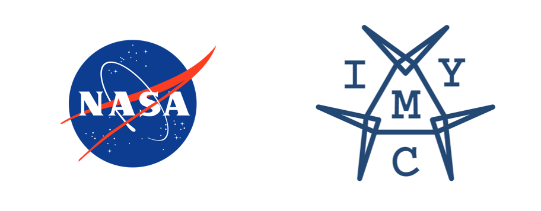

National and International Awards
Represented India at ISEF 2020. Won in International Essay competition for Young People 2018. Included in Asia and India Book of Records. Winner in Scientist for a Day Contest - NASA.

International Awards
- Finalist at the World’s biggest Regeneron ISEF (International Science and Engineering Fair) held from May 10-15, 2020 at Anaheim, California 2020.
- First prize in 2018 International Essay competition for Young People organized by The GOI Peace Foundation and Japanese National Commission for UNESCO.
- Winner Grade 9-12 Target-Europa in National Aeronautics and Space Administration (NASA) - Scientist for a day (2018-2019) essay contest.
2018-19 India Winner, Grade 9-12 - Target: Europa | Winners – NASA Radioisotope Power Systems
NASA’s RPS program enables more capable future space missions by supporting the development of advanced technologies for power conversion nuclear power technologies.

- Awarded and included in Asia Book of Records for ‘Maximum articles written by an adolescent to spread awareness about topics related to Science, artificial intelligence, nuclear security at the young age of 16 years and 3 months.’
MAXIMUM ARTICLES WRITTEN BY AN ADOLESCENT TO SPREAD AWARENESS
Shreenabh (born on December 4, 2003) of Maharashtra, India, set a record for writing the maximum number of art
 Asia Book of Records Team
Asia Book of Records Team
- Won a bronze medal at Pramerica Spirit of Community Awards.
- Stood First in the World in the International Youth Math Challenge, one of the biggest online math competition for students from all around the world.
Chanda Devi Saraf School & Jr. College student Shreenabh brings home the IYMC International Award in Mathematics - The Live Nagpur
Shreenabh Agrawal, Class XII student of The Chanda Devi Saraf School & Junior College has made…

- First prize in 2018 Pendle War Poetry Competition organized at London in the Under 18 Overseas category.
National Awards
- Awarded Pradhan Mantri Rashtriya Bal Puraskar 2021, India's highest civilian honour bestowed upon exceptional achievers under the age of 18 in the category of "Innovation".
Shreenabh Agrawal gets Rashtriya Bal Puraskar
Here is a great news for the city. Shreenabh Agrawal, the young genius from Nagpur, has been awarded Pradhan Mantri Rashtriya Bal Puraskar-2021 in Innovation category. Shreenabh, son of Moujesh and Tinu Agrawal, is a 17-year-old genius with a long list of achievements. A regulator contributor to ’Th…
 The Hitavada
The Hitavada
- Grand Award at IRIS (Initiative for Research and Innovation in Science) National Science Fair 2020, a carnival of innovations initiated by Department of Science & Technology(DST), Government of India , the Indo-US Science & Technology Forum (IUSSTF) and REGENERON California USA held from January 22-24, 2020 at Bengaluru, Karnataka.
- Awarded and included in India Book of Records as the Youngest to write a story book on PM’s schemes on 22nd November 2015.
SHREENABH AGARWAL RECEIVED PRADHAN MANTRI RASHTRIYA BAL PURASKAR - IBR
India Book of Records congratulates our esteemed record holder Shreenabh Agrawal for receiving the prestigious Pradhan Mantri Rashtriya Bal Puraskar 2021 for authoring a book. Shreenabh Agrawal from Nagpur Maharashtra has changed the lives of thousands of farmers by his innovative farming technique…

- "A" category Citation and Gold medal at NCSC (National Children's Science Congress) the flagship programme of National Council for Science and Technology Communication (NCSTC), Department of Science & Technology (DST), Government of India held on 27-31 December 2019 at Thiruananthapuram.
- Awarded the CSIR NEERI Foundation Day Award 2017 on 8th April 2017.